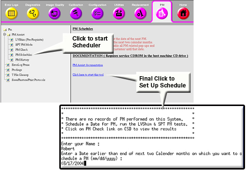
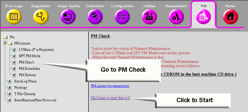

Proprietary to General Electric Company
Direction 5440000, Rev# 5
Signa HDxt Service Methods
Module Version 1.0, Version Date 4/26/07
Proprietary to General Electric Company |
| Required Persons | Preliminary Reqs | Procedure | Finalization |
|---|---|---|---|
| 1 | Not Applicable | 15 mins | Not Applicable |
| NOTE: | For Signa OpenSpeed, this tool is supported from OpenSpeed4 M4
and later. For Signa Ovation, this tool is supported from Ovation4 M4 patch and later. |
Install the USB Service Key into the system.
On the Service Desktop, start the Service Browser if it is not already running.
Select the [PM] tab.
Double Click on the [PM Assist] Folder to expand it's menu/content.
Refer to Illustration 1. Select [PM Schedule].
| NOTE: | The following illustration is an example of 1.5T systems. According to the system, the menu or message may slightly differ. |
Illustration 1: Starting the PM Scheduler

Create a new PM Record by entering a name of who will do the PM and when is it scheduled.
Install the USB Service Key into the system.
On the Service Desktop, start the Service Browser if it is not already running.
Select the [PM] tab.
Double Click on the [PM Assist] Folder to expand it's menu/content.
Refer to Illustration 2.
| NOTE: | The following illustration is an example of 1.5T systems. According to the system, the menu or message may slightly differ. |
Illustration 2: Starting PM Check

If this is the first time you have entered this option, without the PM Assist mode of LVShim or SPT completed, it will indicate a incomplete PM. This is normal for the first time. After a PM, which includes LVShim and SPT (which must be run from the PM Assist Menu) the output will include the latest LVShim and SPT PM Pass/Fail results as well as last and Next Scheduled PM Dates.
No finalization steps.